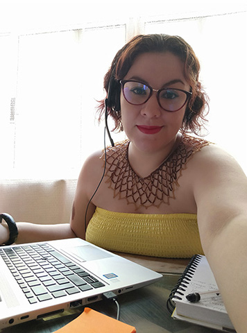
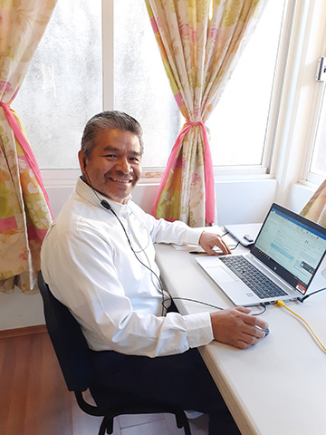
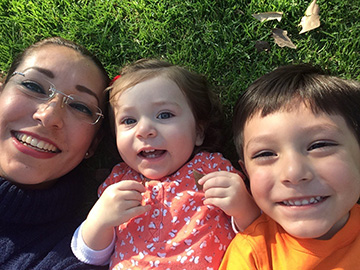
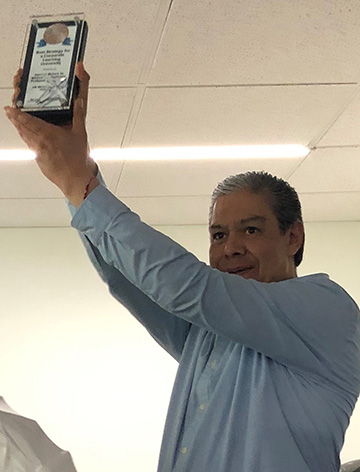
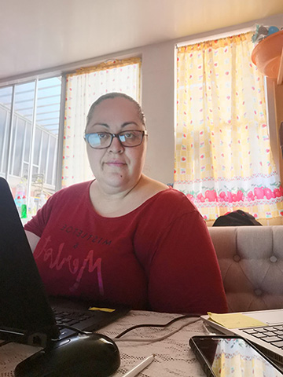
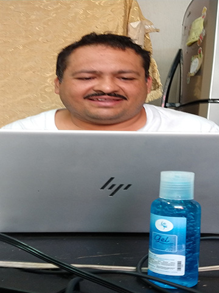

El 11 de marzo de 2020, la Organización Mundial de la Salud (OMS) declaró el brote del nuevo virus, COVID-19, como una pandemia.
Desde el inicio de la pandemia a la fecha, varios miembros de PTS ha perdido a una persona cercana, ha tenido casos del virus en su entorno cercano o ha tenido cambios profundos en su realidad personal y familiar.
¿Qué ha cambiado?

Jennifer Vaca
¿Dónde quieres estar cuando esto termine?
Espero que cuando todo sea “normal”, el ritmo de trabajo también se pueda normalizar.
¿Qué necesitas para llegar ahí?
Nunca perder las ganas de aprender el tener disposición y actitud ayuda mucho para que los nuevos retos fluyan.
¿Estás haciendo lo necesario para adaptarte?
Sí, a diferencia de otras personas de las cuales lamento mucho saber que tuvieron pérdidas, yo viví todo lo positivo: adecué un espacio en mi casa para poder trabajar. He aprovechado mi tiempo en cosas muy productivas; el que quiere trabajar (no importa si está en la oficina, en casa o en la playa, je, je) es responsable donde esté.
Felipe Ángeles
¿Dónde quieres estar cuando esto termine?
Quiero compartir con otros el conocimiento adquirido y la experiencia. Quiero ser un muy buen instructor y, para lograrlo, solo tengo que aprender de mis compañeros.
¿Qué necesitas para llegar ahí?
Seguir estudiando y aprendiendo, no solo de las materias automotrices, sino también reforzar las técnicas del cómo transmitir conocimiento a través de las distintas formas que ahora hemos experimentado.
¿Estás haciendo lo necesario para adaptarte?
Sí. Aunque a veces las múltiples actividades del trabajo cotidiano absorben mucho de mi tiempo y energía, siempre hay formas, y ahora bajo esta circunstancias, también hay más tiempo disponible para seguir mejorando.
Axel Zamudio
¿Dónde quieres estar cuando esto termine?
He aprendido a poner mi atención y energía en lo que realmente importa. Por más planes que hagamos y organicemos, siempre habrá situaciones que vendrán a retarnos y obligarnos a adaptarnos; siempre nos ayudará tener la actitud positiva y disposición para resolver las cosas.
¿Qué necesitas para llegar ahí?
La actitud que asumo ante cada situación, procurando buscar siempre la solución y dejando actitudes negativas que no ayudan para nada.
¿Estás haciendo lo necesario para adaptarte?
Estoy segura que sea cual sea el cambio que venga, será una oportunidad de mejorar y crecer si así decido manejarlo.
Gustavo Bautista
¿Dónde quieres estar cuando esto termine?
En un lugar en el que comparto experiencias, espacios, tiempos; necesitamos de las habilidades y conocimientos de los demás para funcionar, producir y ganar como individuos y como sociedad. Diferentes personas, diferentes ideas, diferentes habilidades, un solo objetivo: un Resultado Exitoso. Yo quiero estar en un lugar así.
Diana de León
¿Dónde quieres estar cuando esto termine?
Quiero seguir trabajando para PTS y continuar desarrollando habilidades que permitan dar mejores resultados tanto en mi trabajo como en mi vida personal.
¿Qué necesitas para llegar ahí?
Estoy orgullosa y segura de que puedo lograr lo que me proponga. Me siento muy orgullosa de formar parte de PTS; no estaría mal cerrar mi ciclo laboral con ustedes, hacerme viejita y retirarme con gran orgullo.
¿Estás haciendo lo necesario para adaptarte?
Sí, diario hay cosas nuevas que aprender, así que debo seguir trabajando arduamente para mantenerme a la vanguardia; tengo al 100% es la actitud de seguirme adaptando y de mejorar.
Braulio Becerril
¿Dónde quieres estar cuando esto termine?
Quisiera estar otra vez frente y seguir haciendo lo que más disfruto en la vida: compartir con los técnicos lo poco que sé y que me costó mucho aprender; el haber superado la enfermedad y tener a mi familia completa y sana es el estímulo que me da la firmeza para adaptarme.
00 minutos 00 segundos